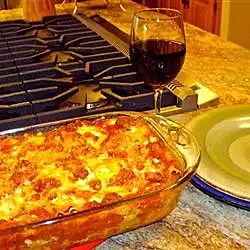

Lasagna

Description
Lasagna is a type of pasta, possibly one of the oldest types, made of very wide, flat sheets.
Ingredients
- 1 package of lasagna noodles (16 ounce)
- 1 pound lean ground beef
- salt and pepper
- 1 jar spaghetti sauce (16 ounces)
- 1 clove garlic (minced)
- 1/2 pound shredded mozzarella cheese
- 1/2 pound shredded cheddar cheese
- 1 pint ricotta cheese
Steps
- Bring a large pot of lightly salted water to a boil. Add pasta and cook for 8 to 10 minutes or until al dente; drain.
- Preheat oven to 350 degrees F (175 degrees C). In a large skillet over medium-high heat, brown beef and season with salt and pepper; drain. Stir in spaghetti sauce and garlic and simmer 5 minutes.
- In a medium bowl, combine mozzarella, Cheddar and ricotta; stir well. In 9x13 inch pan, alternate layers of noodles, meat mixture and cheese mixture until pan is filled.
- Bake in preheated oven for 30 minutes, or until cheese is melted and bubbly.
Back to homepage